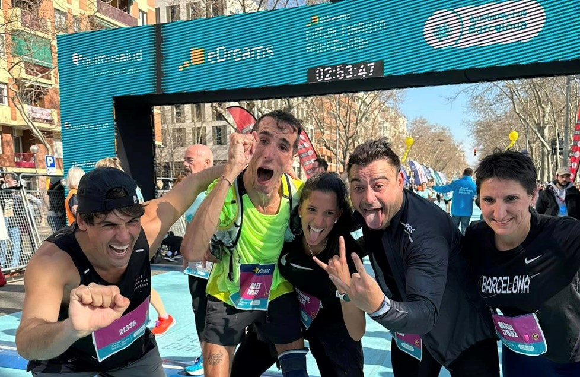

Lionel Messi habló por primera vez luego de ser campeón: "Sabía que Dios me iba a regalar un Mundial"
Para muchos el mejor futbolista de toda la historia, la gran cuenta pendiente de Messi era ganar un Mundial. Ese era el “asterisco” que, para algunos, le impedía estar a la altura de Diego Armando Maradona en la consideración de los amantes del fútbol.

Frecuentaba los clubes de striptease todos los sábados”: escándalosa acusación contra James Rodríguez tras su salida del Olympiakos de Grecia
Los hinchas apuntaron contra el colombiano por la floja campaña del equipo. Se suma a otros antecedentes por sus salidas nocturnas en Real Madrid y Bayern Múnich

El mensaje de Pablo Duggan tras la polémica con el Kun Agüero por la dolarización y el áspero ida y vuelta
El periodista le pidió disculpas al ex delantero a través de su cuenta de Twitter. Los detalles

Refuerzo gratis y del gusto de Jorge Almirón: quién sería la nueva cara de Boca Juniors en el próximo mercado
El entrenador xeneize le levantaría el pulgar a un ex futbolista al que dirigió en Colombia

La emocionante proeza del primer atleta con parálisis cerebral que logró completar una maratón

Quiénes son las promesas que integran la lista de la Selección Sub 17 para el Sudamericano de Ecuador: por qué dirigirá Placente y no Aimar